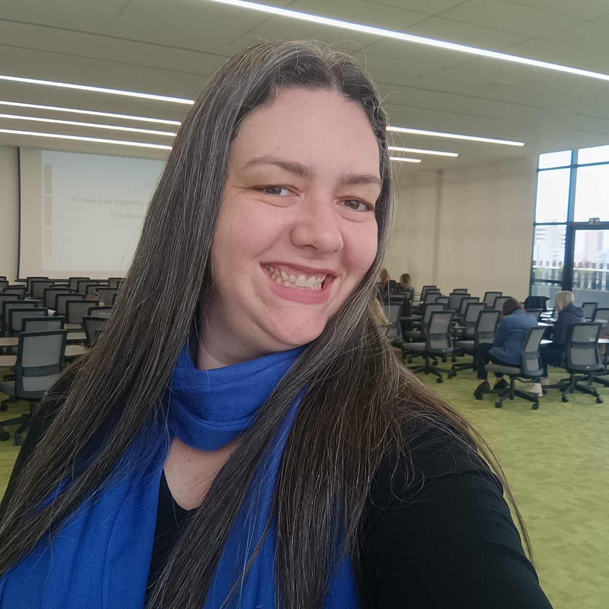

Consultoria INSS e Atestmed
Pareceres técnicos para auxílio-doença, auxílio-acidente, aposentadoria por invalidez e reversão de negativas documentais.
Fisioterapeuta Forense e Perita Judicial (CREFITO-5 83.169/F | Membro Titular ABRAPEFI). Elaboração de Parecer Cinesiológico-Funcional baseado na CIF para reversão de negativas no INSS (Atestmed), Isenção PCD, ações trabalhistas e assistência técnica para advogados.
Quando o Auxílio por Incapacidade Temporária é negado na análise documental (Atestmed), o prazo para apresentar novos documentos técnicos é de apenas 10 dias.
O erro mais comum: reenviar o mesmo atestado simples contendo apenas a CID. Com duas negativas, o segurado perde o direito à análise rápida e cai na fila da perícia presencial obrigatória.
Toque na opção que melhor descreve o seu caso. O WhatsApp abrirá automaticamente com a mensagem pronta para iniciarmos sua avaliação.
A isenção de IPI, ICMS e IPVA não é exclusiva para deficiências visíveis. Pessoas com redução de força, sensibilidade ou mobilidade decorrentes de patologias ortopédicas e cirurgias podem ter o direito reconhecido.
Apresentar apenas o Raio-X, a Ressonância ou um atestado simples não costuma ser suficiente. O órgão exige a comprovação clara de como a condição limita a mobilidade. Elaboramos o Laudo Cinesiológico-Funcional completo para fundamentar o seu processo com segurança técnica.
Colega Advogado(a), não deixe o resultado da ação depender apenas do laudo do perito judicial ou de atestados genéricos. Atuo como sua Assistente Técnica 100% digital em todo o Brasil.
Elaboração ágil de Parecer Cinesiológico-Funcional baseado na CIF para reverter negativas por mérito médico antes de cair na perícia presencial.
Formulação de perguntas técnicas cirúrgicas que conduzem o perito do juízo a constatar o nexo causal e a real incapacidade laborativa.
Análise crítica de laudos periciais desfavoráveis, apontando omissões biomecânicas e falhas metodológicas com respaldo científico.
Documentação técnica rigorosa para processos judiciais e administrativos em todo o país.
Pareceres técnicos para auxílio-doença, auxílio-acidente, aposentadoria por invalidez e reversão de negativas documentais.
Apoio completo a advogados na formulação de quesitos, impugnações e pareceres de divergência em todo o Brasil.
Análise biomecânica e nexo causal em doenças ocupacionais (LER/DORT), afastamentos e redução da capacidade laboral.
Avaliação documental e Laudo Cinesiológico-Funcional detalhado para isenção de impostos na compra de veículos e IPVA.
Apuração técnica do grau de sequela e invalidez permanente para embasar pedidos indenizatórios e securitários.
Pareceres técnicos imparciais em ações envolvendo intercorrências em tratamentos ortopédicos, cirúrgicos ou fisioterapêuticos.
Você não precisa sair de casa. Atendemos clientes e escritórios de advocacia em todos os estados do Brasil.
Você envia um breve resumo da sua situação (INSS, PCD, ação trabalhista ou parceria jurídica) e tiramos suas dúvidas iniciais.
Avaliamos seus exames, laudos anteriores, histórico clínico ou autos do processo com base nos critérios da CIF.
Você recebe o documento técnico assinado e fundamentado, pronto para ser anexado no Meu INSS, DETRAN ou processo judicial.

Fisioterapeuta Forense • Perita Judicial • CREFITO-5 83.169/F • Membro Titular ABRAPEFI
Com mais de 20 anos de atuação clínica e pericial, sou especialista em Ortopedia e Traumatologia, capacitada em Ergonomia e Membro Titular da ABRAPEFI (Associação Brasileira de Perícias Fisioterapêuticas).
Meu trabalho é eliminar a subjetividade que faz tantos trabalhadores, pacientes e advogados perderem direitos legítimos. Por meio da Consultoria Pericial Documental 100% online, traduzo a dor e a limitação funcional para a linguagem técnica e científica que o INSS, o DETRAN e o Poder Judiciário exigem.
Sim. A consultoria pericial documental e o Parecer Cinesiológico-Funcional elaborado com base na CIF e assinado por Fisioterapeuta Forense registrada no CREFITO-5 (83.169/F) e Membro Titular ABRAPEFI têm validade técnica em processos judiciais e administrativos em todo o território nacional.
Após a negativa na análise documental do Atestmed, existe uma janela de 10 dias para enviar documentação complementar. Reenviar apenas o mesmo atestado com CID costuma gerar uma segunda negativa. O Parecer Cinesiológico-Funcional demonstra de forma técnica e objetiva a incapacidade para o trabalho.
O atestado comum geralmente cita apenas o código da doença (CID). Já o Laudo ou Parecer Cinesiológico-Funcional utiliza critérios científicos baseados na CIF para comprovar exatamente como a doença ou dor limita seus movimentos, força e capacidade funcional.
Sim. Doenças crônicas, ortopédicas e dores invisíveis (como Fibromialgia, Hérnia de Disco, Artrose, Tendinite, lesões de ombro e sequelas cirúrgicas) podem ser avaliadas tecnicamente para fundamentar pedidos no INSS, isenções PCD ou ações trabalhistas.
Preencha os dados ao lado e clique no botão verde. Sua mensagem será montada automaticamente e aberta direto no meu WhatsApp para agilizarmos a avaliação.